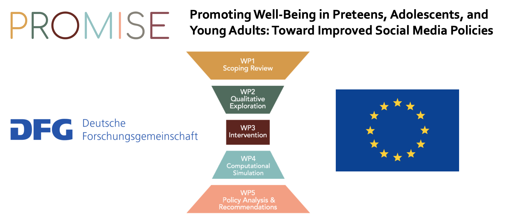
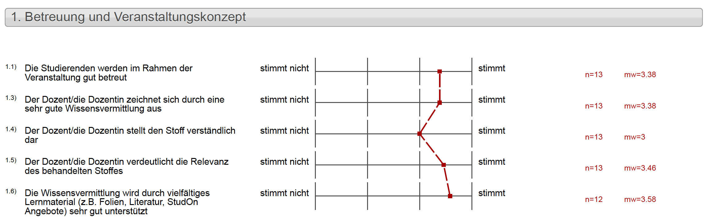
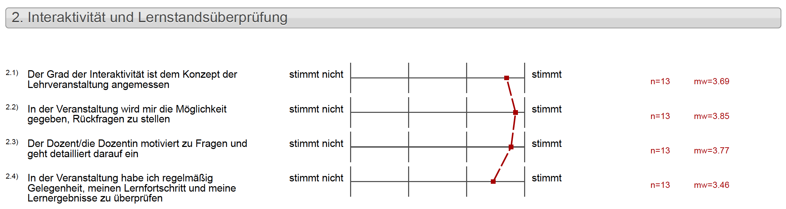
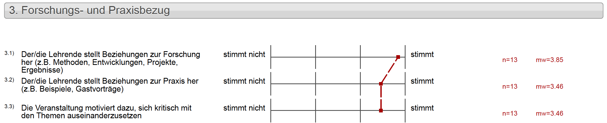
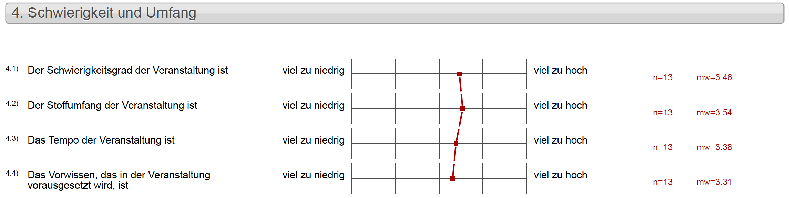

| Session | Datum | Topic | Presenter |
|---|---|---|---|
| 📂 Block 1 | Introduction | ||
| 1 | 23.10.2024 | Kick-Off | Christoph Adrian |
| 2 | 30.10.2024 | DBD: Overview & Introduction | Christoph Adrian |
| 3 | 06.11.2024 | 🔨 Introduction to working with R | Christoph Adrian |
| 📂 Block 2 | Theoretical Background: Twitch & TV Election Debates | ||
| 4 | 13.11.2024 | 📚 Twitch-Nutzung im Fokus | Student groups |
| 5 | 20.11.2024 | 📚 (Wirkungs-)Effekte von Twitch & TV-Debatten | Student groups |
| 6 | 27.11.2024 | 📚 Politische Debatten & Social Media | Student groups |
| 📂 Block 3 | Method: Natural Language Processing | ||
| 7 | 04.12.2024 | 🔨 Text as data I: Introduction | Christoph Adrian |
| 8 | 11.12.2024 | 🔨 Text as data II: Advanced Methods | Christoph Adrian |
| 9 | 18.12.2024 | 🔨 Advanced Method I: Topic Modeling | Christoph Adrian |
| No lecture | 🎄Christmas Break | ||
| 10 | 08.01.2025 | 🔨 Advanced Method II: Machine Learning | Christoph Adrian |
| 📂 Block 4 | Project Work | ||
| 11 | 15.01.2025 | 🔨 Project work | Student groups |
| 12 | 22.01.2025 | 🔨 Project work | Student groups |
| 13 | 29.01.2025 | 📊 Project Presentation I | Student groups |
| 14 | 05.02.2025 | 📊 Project Presentation & 🏁 Evaluation | Studentds & Christoph Adrian |
Final Session
Session 14
05.02.2025
Seminarplan
Agenda
Job offer: We want you!
Student assistants for a DFG-funded, European research project!
More info? Click here
Job offer: We want you!
Student assistants for a DFG-funded, European research project!
More info? Click here
Organisatorisches
Überblick der nächsten Wochen
Fahrplan für die Prüfungsleistungen
| Zeitpunkte | Leistung | Status |
|---|---|---|
| Block II | “Themenpräsentation” 📚 | ✅ |
| bis zum 4.12. | R-Tutorials abschließen (Grundlage für Methodenblock) | ✅ |
| bis zum 15.01. | Erster vollständiger Entwurf “Projektpräsentation” 📊 | ✅ |
| vom 16.01. bis zum 21.01. | Ausfüllen der Peer-Review-Formulare | ✅ |
| vom 22.01 bis 29.01/05.02 | Einarbeitung des Feedback in “Projektpräsentation” 📊 | ✅ |
| 29.01./05.02 | “Projektpräsentation” 📊 | ✅ |
| bis zum 02.03.25 | Abgabe des Projektberichts | 🔨 |
Formale Anforderungen
Short Report
- 750 bis 1000 Wörter pro Person. Bei Gruppenbericht skaliert die Anzahl der Wörter mit einem Faktor von 0,8 pro Person (z. B. sollte eine Zweiergruppe 1200 bis 1600 Wörter schreiben, eine Dreiergruppe 1800 bis 2400 Wörter).
- Alle Analysen sowie der schriftliche Bericht müssen in RStudio durchgeführt bw. geschrieben werden und alle Bestandteile des Projekts müssen reproduzierbar sein.
| Total | 40 pts |
|---|---|
| Einführung/Theorie | 6 pts |
| Methode | 10 pts |
| Ergebnisse | 14 pts |
| Diskussion + Fazit | 6 pts |
| Organization + Formalia | 4 pts |
Quarto-Vorlage
Short Report
- Verwendung eines
quarto-journal-Templates (jasa) - Abgabe des RStudio-Projektes sowie der .pdf-Datei
- RStudio-Vorlage auf Lehrstuhl-Github
Evaluation (👍|👎)
Ergebnisse & offene Fragen
Betreuung und Veranstaltungskonzept
FAU Lehrevaluation 1️⃣ | 5️⃣
- Wie hätte der Stoff verständlicher dargestellt werden können?
- Probleme beim bestimmten Inhalten oder spezifische Themen?
Interaktivität und Lernstandsüberprüfung
FAU Lehrevaluation 2️⃣ | 5️⃣
- Idee(n) für Lernstandsüberprüfung?
Forschungs- und Praxisbezug
FAU Lehrevaluation 3️⃣ | 5️⃣
- Wie war die Arbeit mit R?
Schwierigkeit und Umfang
FAU Lehrevaluation 4️⃣ | 5️⃣
- Welche Hinweise (mit Blick auf das Vorwissen) wären hilfreich gewesen?